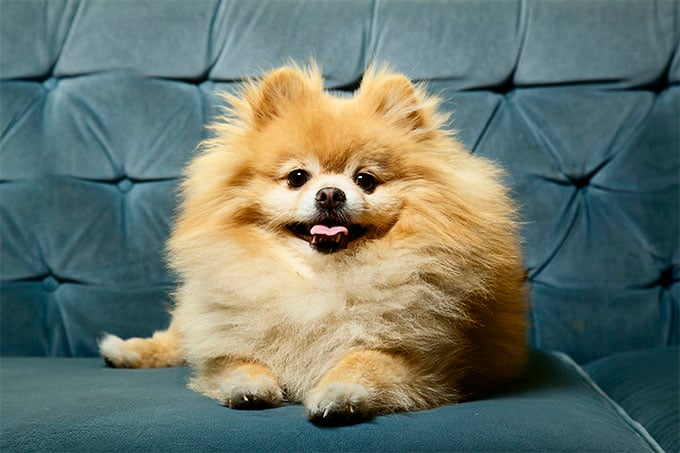

Pomeranian Dog

Descended from large sled dog breeds, the now-tiny Pomeranian has a long and interesting history. The foxy-faced dog, nicknamed “the little dog who thinks he can,” is compact, active, and capable of competing in agility and obedience or simply being a family friend.
Shorkie Dog

Shorkies are mixed-breed dogs. They are not purebreds like their Shih Tzu or Yorkshire Terrier parents.Shorkies usually have straight, medium-to-long coats, and they're generally considered to be a good choice for allergy sufferers.